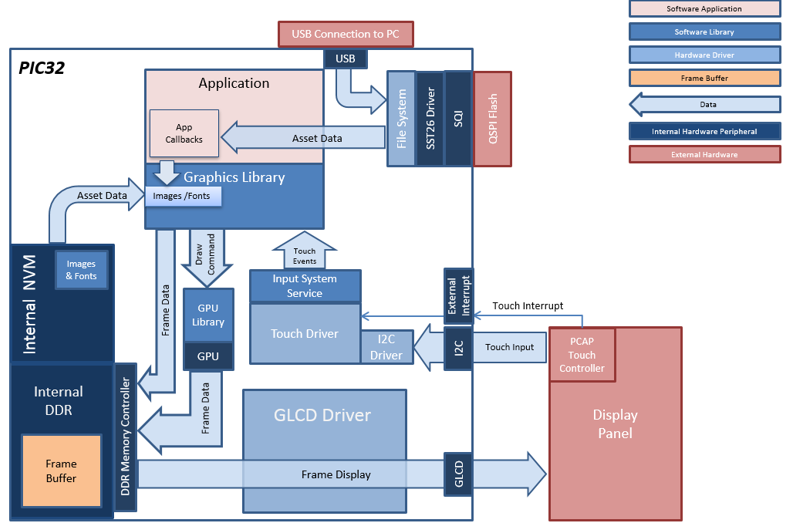
The aria_quickstart_external_resources (external flash reader) application uses the reads previously programmed binary data from the external non-volatile SQI memory. The Graphics Library is used to render graphics to the display. Using the DMA, the Low-Cost Controllerless (LCC) Display Driver continuously transfers frame data from the frame buffer out to the LCD display.
The application also features user touch input through the integrated touch screen on the display panel. Touch input from the touch controller goes through the I2C port, and the Input System Service acquires the touch input information from the Touch and I2C drivers. The Input System Service sends touch events to the Graphics Library, which processes these events and updates the frame data accordingly.
This configuration runs on the PIC32MZ DA Internal DDR Starter Kit + MEB-II and WQVGA display. The Graphics Library is used to render graphics to the display. Using the MZ DA’s internal display controller (GLCD) to continuously transfers frame data from the frame buffer out to the LCD display.
User touch input on the display panel is received thru the PCAP capacitive touch controller, which sends a notification to the Touch Input Driver. The Touch Input Driver reads the touch information over I2C and sends the touch event to the Graphics Library thru the Input System Service.
The USB peripheral is setup in MSD Device mode with the File System service support.
Demonstration Features
- Aria Graphics Library
- Input system service and touch driver
- Time system service, timer-counter peripheral library and driver
- GLCD internal LCD display driver
- 32-bit RGBA8888 color depth (single-layered double buffering)
- GPU library with accelerated draw commands
- EBI peripheral library and driver
- I2C peripheral library and driver
- SST26 SQI driver
- Images and Fonts for user interface stored in external flash (NVM)
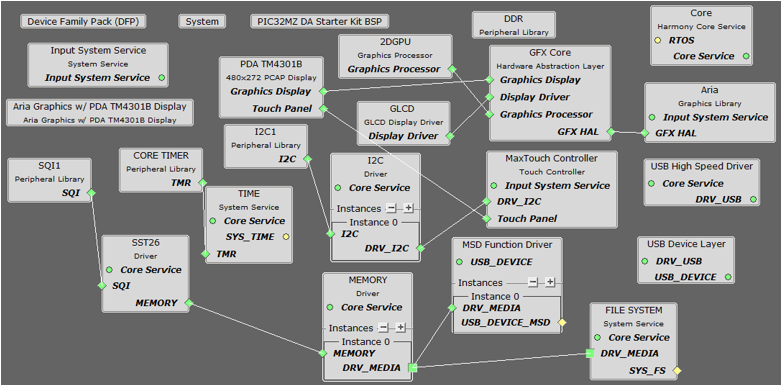
The Project Graph diagram shows the Harmony components that are included in this application. Lines between components are drawn to satisfy components that depend on a capability that another component provides.
Adding the “PIC32MZ DA Internal DDR Starter Kit BSP” and “Aria Graphics w/ PDA TM4301B Display” Graphics Template component into the project graph will automatically add the components needed for a graphics project and resolve their dependencies. It will also configure the pins needed to drive the display and the touch controller.
This will automatically add the components needed for a graphics project and resolve their dependencies. It will also configure the pins needed to drive the external peripherals like the display and the touch controller.
Additional components to support SQI, SST26, File System and USB Device driver need to be added and connected manually.
Some of these components are fine with default settings, while other require some changes. The following is a list of all the components that required custom settings.
Apply the following setting to SST26
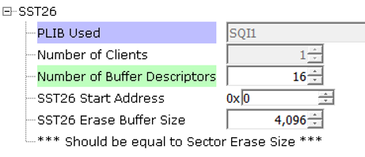
Apply the following settings to Instance 0 of the Memory component
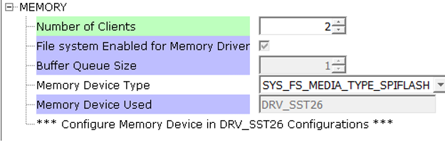
Apply the following settings to the File System component

Apply the following for the USB Device layer component
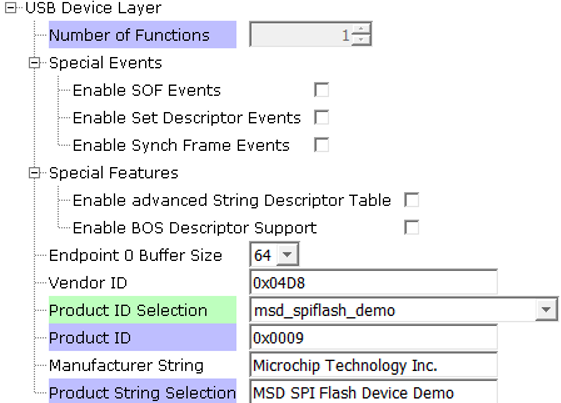
In the Pin Manager, connect the following 6 pins for the SQI component (do not connect SQID3)
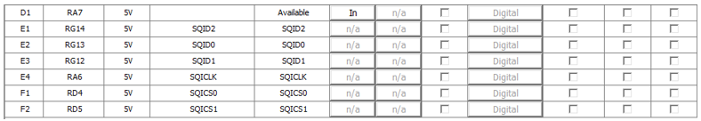
In the Clock Manager, make sure POSC, SYSPLL, SYSCLK, and REFCLK2 is setup as shown:
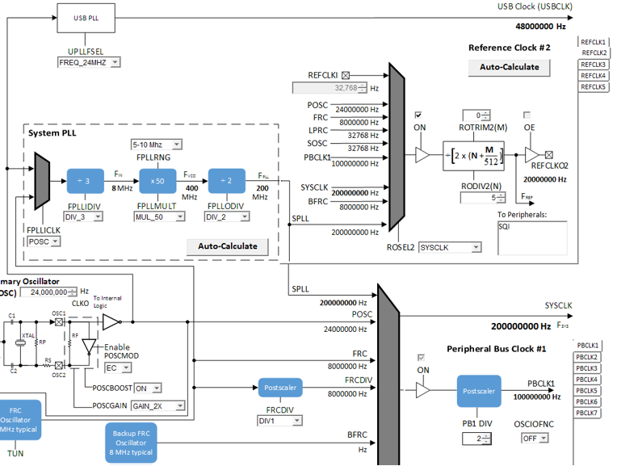
The parent directory for this application is gfx/apps/aria_quickstart_ext_res. To build this application, open the gfx/apps/aria_quickstart_ext_res/firmware/aria_qs_msd_host_sdcard_fs_mzda_intddr_sk_tm4301b.X project file in MPLABX IDE that corresponds to the hardware configuration.
The following table lists configuration properties:
|
Project Name |
BSP Used |
Graphics Template Used |
Description |
|
PIC32MZ DA Internal DDR Starter Kit BSP |
Aria Graphics w/ PDA TM4301b Display |
PIC32MZ DA INT DDR Multimedia Expansion Board II with 4.3” WQVGA PCAP Touch display |
 Important! Important! |
This application may contain custom code that is marked by the comments // START OF CUSTOM CODE ... and // END OF CUSTOM CODE. When using the MPLAB Harmony Configurator to regenerate the application code, use the "ALL" merging strategy and do not remove or replace the custom code. |
On the MEB II, the EBIOE and LCD_PCLK (J9) must be jumpered. A connection establishes the GLCD's pixel clock output timing. The external SRAM memory on the board is disabled. The J9 jumper is located on the bottom of the MEB II board, beneath where the starter kit is plugged into the board. Refer to the following figure for the exact location.

Connect the PIC32MZ DA Starter Kit to the MEB II board

Connect a USB cable from the host computer to the J6 USB micro port. This can be connected before or at any point after the application is powered-on.
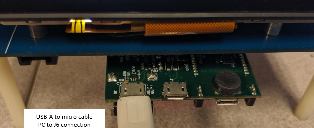
When power-on is successful, without a USB or SD MSD device attached, the demonstration will display a screen with the following message:
When power-on is successful, if there are no the SST26 SQI Flash is not formatted to FAT32 or the files Images.bin, Fonts1.bin and Fonts2.bin do not exist on the SST26 SQI Flash, the demonstration will display a screen with the following message:

The entire screen is touch sensitive. Touch any part of the screen will toggle the languages of the strings shown on screen.

When the second USB cable from the host computer to the ‘Target USB’ USB micro port is connected, LED1 (red on the starter kit) will light up.
If the SST26 SQI Flash is not formatted to FAT32, the PC (if running windows) will request the drive be formatted.
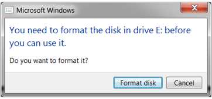
Format the SST26 SQI Flash with the default settings as shown below. When the format operation is completed, the PC should detect the application as a removable disk drive.
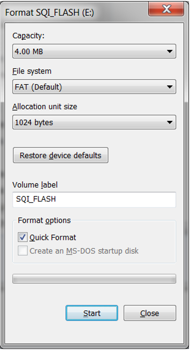
From the folder of the corresponding configuration of this application (gfx\apps\aria_quickstart_ext_res\firmware\src\config\glcd_rgba8888_mxt_msd_fs_sqi_flash_mzda_intddr_sk), copy the files Images.bin, Fonts1.bin, and Fonts2.bin to the newly detected Removable Disk.
On completion of the file copy, the application may need a power cycle. After the relaunch, if the application detects the presence of all three files (Images.bin, Fonts1.bin and Fonts2.bin), depending on the current language set, a button with text “Press To Load External Assets” or “按加载外部资产” will appear.
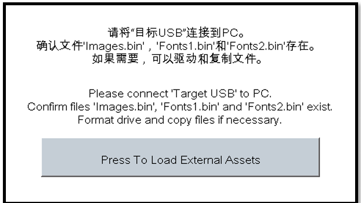
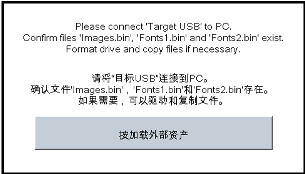
Press the button and the application will load a new screen that utilizes the image and font assets from the accessing the SST26 SQI Flash via File System. Depending on the current language set, the display will have either one of these screens:


In the new screen, pressing the button will cause the application to load a new image. The image cycles in order from Uncompressed RAW with Direct Blit, Uncompressed RAW, Run-Length Encoded (RLE) RAW, to JPEG.
The MPLAB Harmony Graphics Suite logo is also a button. Pressing the logo will toggle the application between English and Simplified Chinese.
Note that, once in the main screen, the application will expect to consistently retrieve assets from the SST26 SQI Flash. Should some or all of the files are deleted, the application will not crash. Instead, the graphics library will paint the screen without images and/or fonts. This highlights the robustness of the graphis library to handle asset retrieval errors.
The application is purposely setup in single-buffer configuration to allow visual inspection of the data retrieval speed of the various images and glyphs.
|
MPLAB® Harmony Graphics Suite
|